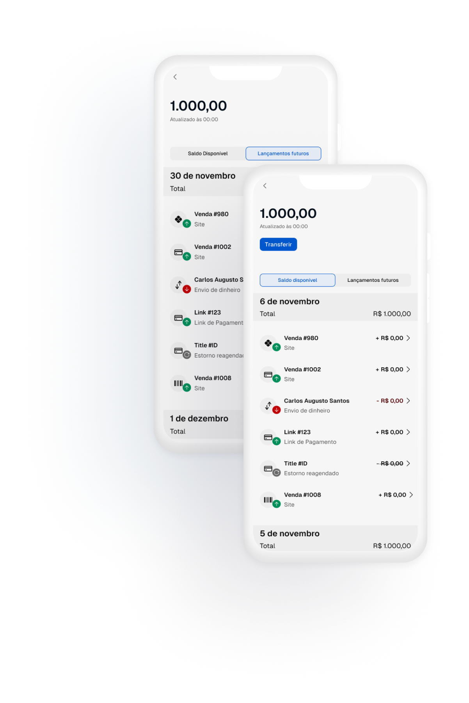
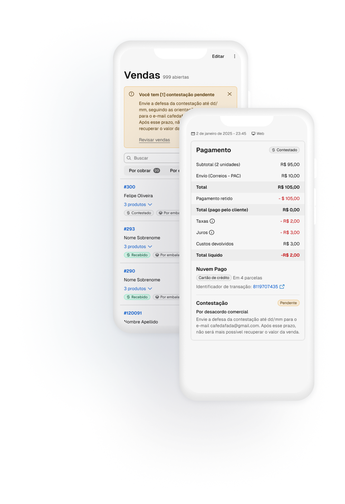
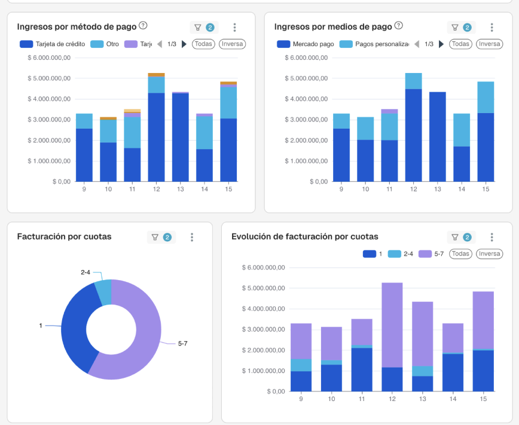
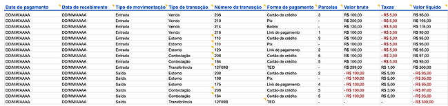
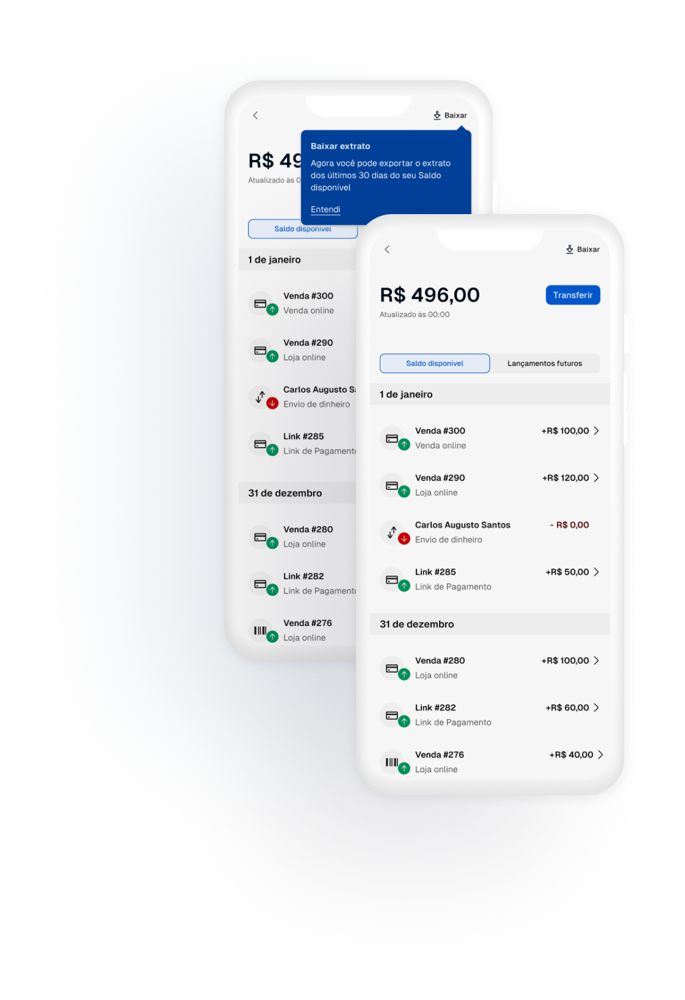
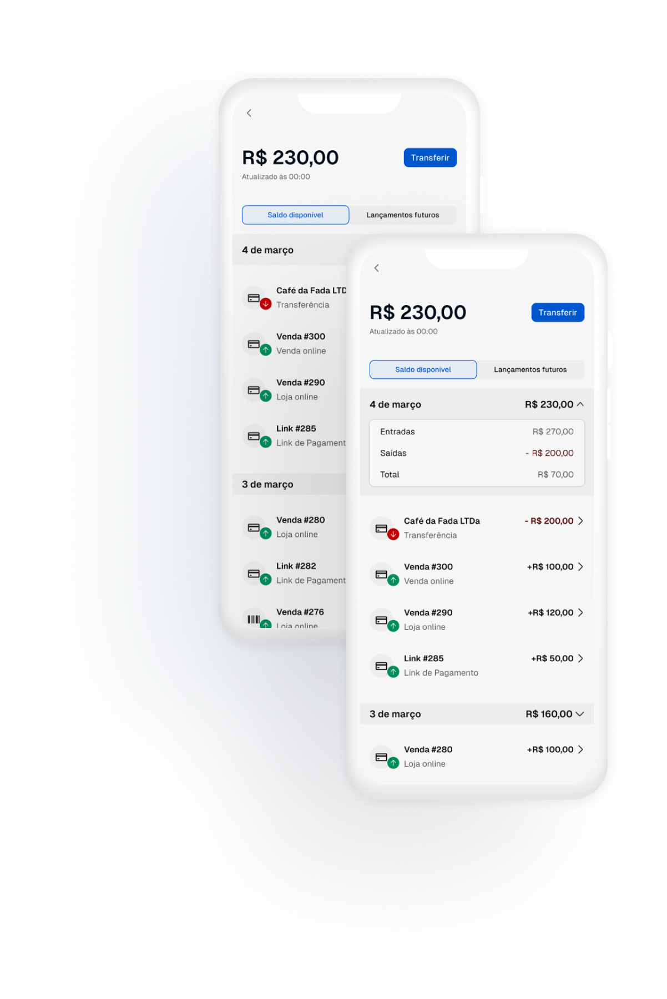
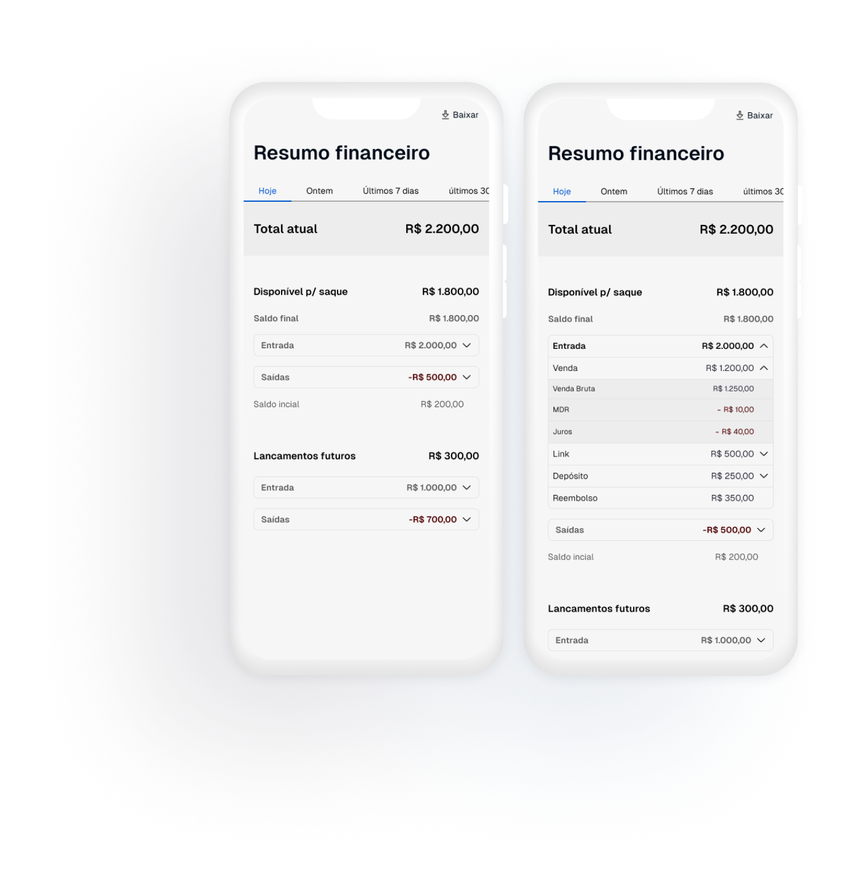
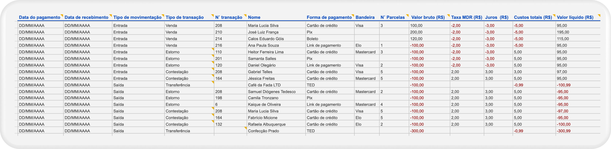
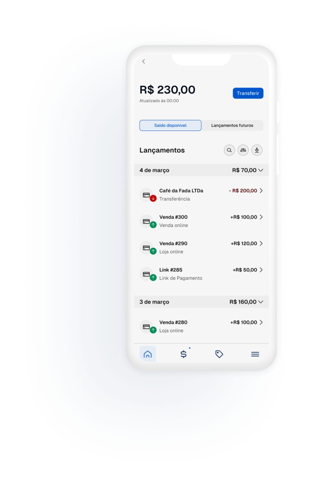
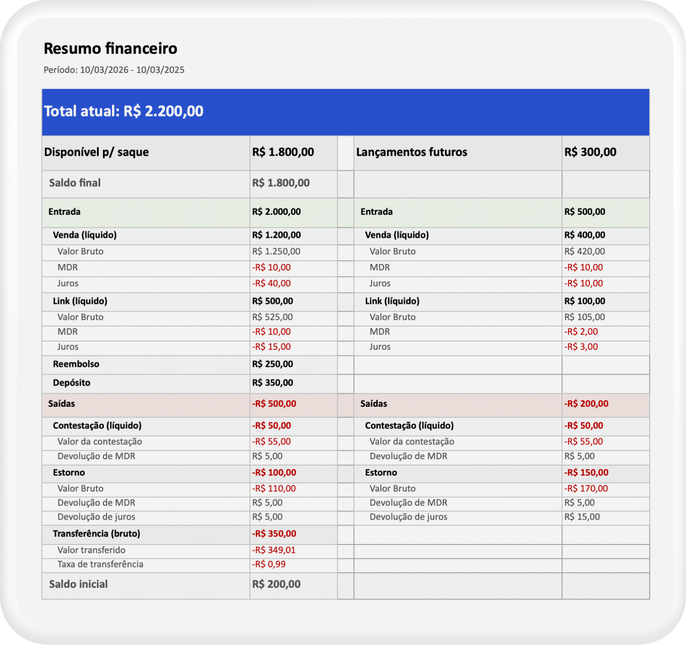

Extrato que não oferece informação suficiente para identificar a movimentação (ex.: ID da venda, ID do link, beneficiário da transferência). Dependência do suporte para ter acesso aos relatórios cruciais para fazer as tarefas de gestão financeira.
Entregamos uma novo extrato, onde a visão deixa de ser por paybles como no extrato antigo e passa ser transação. Dessa forma, as informações serão apresentadas por Id e tipo da transação, deixando claro a qual venda ou link se refere cada movimentação.
Incluímos casos de uso que não tratávamos no extrato antes, como todos os casos de TERs conectados a troca de titularidade, como reembolsos, Cobertura contestação, Ordem judicial, Parcela de crédito entre outros.

2
Falta de dados sobre contestação das vendas, para fazer fechamento de caixa, conciliação e a DRE
Incluímos os chargebacks no extrato
Entregamos a Fase 1 da experiência de contestação em Orders, onde passamos a alertar a chegada do chargeback, a te o status de chargeback na venda e direcionar ao envio da defesa por email.
Estamos incluindo os substatus da contestação em Orders e o envio de defesa direto no produto tanto para Pagarme quanto para Getnet, reduzindo a chance de perda de disputa e facilitando no entendimento sobre o que está acontecendo com a venda.
Time de orders vai passar a informar no exportável de oders os status , datas e as entradas e saídas do valor da venda para viabilizar a conciliação financeira

3
Falta de dashboards nativos para ver as informações em tempo real.
O time de Reports lançou um MVP do painel estatístico com dados de pagamentos, com informações como: Total de faturamento por forma de pagamento, por meio de pagamento, por número de parcela entre outros.

4
Extrato que não oferece informação suficiente para identificar a movimentação (ex.: ID da venda, ID do link, beneficiário da transferência). Dependência do suporte para ter acesso aos relatórios cruciais para fazer as tarefas de gestão financeira.
Adicionamos a opção de exportar o extrato direto da tela de saldo disponível e lançamentos futuros.


O que ainda precisamos resolver
1
Falta de acesso à visão de saldo inicial e final da conta para fazer fechamento de caixa.
Incluir resumo financeiro diário no extrato.
Incluir informação de saldo no extrato. A transparência sobre o saldo do dia reduz a dependência do envio de relatórios mensais ou semanais para ter acesso à informação essencial ao fechamento de caixa, em geral uma tarefa diária. A visualização (saldo inicial, movimentações e saldo final) permite que o lojista entenda quais transações compõem o saldo atual. Esse dado também será base para a conciliação bancária, quando o Nuvem Pago passar a ser tratado definitivamente como a conta bancária.
Adicionar PNF.
Adicionar os casos de uso de PNF com a projeção completa de lançamentos futuros.

2
Falta de acesso à visão de saldo inicial e final da conta para fazer fechamento de caixa.
Resumo financeiro por período.
Extrato que não oferece informação suficiente para identificar a movimentação (ex.: ID da venda, ID do link, beneficiário da transferência). Hoje passamos a dar visibilidade para mais detalhes sobre as transações, mas há pouca transparência sobre os consolidados de valores, que ajudam a conferir se os totais faturados batem com os totais processados pelo Nuvem Pago. Exibir esses dados no produto permite que o financeiro ganhe agilidade, tirando a dependência de relatórios enviados pelo suporte e eliminando o trabalho de fazer cálculos para chegar a esses valores.

3
Falta de dashboards nativos para ver as informações em tempo real.
Evoluir as estatísticas de pagamento
Evoluir os dados estatísticos relacionados a pagamento que foram mapeados por produto.
4
Dependência do suporte para ter acesso aos relatórios cruciais para fazer as tarefas de gestão financeira.
Evoluir o Exportável de saldo disponível e lançamentos futuros com base nos feedbacks dos lojistas.
Adicionar o nome do cliente/beneficiário, pois em algumas ERPs não se tem o ID da venda, então é uma segunda forma do lojista identificar no relatório a movimentação.
Adicionar a diferenciação de estorno total e parcial para conseguir bater a movimentação na conta com a gestão da venda via order ou via ERP.
Quebrar o total de custos em MDR e juros no exportável do Nuvem Pago. Temos esse dado em orders, mas está no meio de uma série de outros dados, e como em orders não tem link de pagamento, o lojista acaba usando mais o relatório do Nuvem Pago que consta os links. Então, para não pegar informações fragmentadas em relatórios distintos, o ideal no momento é adicionar esse dado no relatório do Nuvem Pago.
Adicionar a bandeira. Hoje existe esse dado em orders, mas orders não contém todas as movimentações, então o ideal é ter no relatório do Nuvem Pago, para o lojista não depender do relatório de orders ou do suporte para ter a informação da bandeira usada no pagamento via link.
Permitir filtrar o relatório por período, melhorando o desempenho do arquivo e alinhando o exportável ao perfil da maioria dos entrevistados, que o utilizam nas rotinas diárias de fechamento e conciliação.
Não enviamos a projeção de recebíveis completa necessária para entender o regime de caixa para a DFC.
Em versões futuras, permitir que o lojista possa personalizar o relatório através da Lumi (nossa IA), e/ou que a gente sugira quais informações o relatório deve conter de acordo com o objetivo, a tarefa ou a pergunta que o lojista precisa responder.

5
Dependência do suporte para ter acesso aos relatórios cruciais para fazer as tarefas de gestão financeira.
Evoluir o extrato atual
Permitir filtragem por período, tipo de transação e forma de pagamento, para o encontro de movimentações específicas que precisam ser analisadas no dia a dia da gestão financeira e na gestão da venda.
UX: permitir que o lojista abra o detalhe da transação em uma nova aba sem ter que sair da tela do extrato toda vez que clica numa linha de transação.
Em vez de mostrar só o valor líquido da transferência, exibir o valor bruto (valor da transferência + taxa); caso contrário, a taxa de transferência fica como diferença entre o saldo real e a somatória das linhas de movimentação quando há transferência no meio.
Adicionar os casos de uso pendentes, como pagamento no fluxo e liquidação externa, para permitir que as lojas que possuem esses casos de uso tenham acesso ao extrato e aos relatórios sem depender do suporte.

6
Dependência do suporte para ter acesso aos relatórios cruciais para fazer as tarefas de gestão financeira.
Exportar e enviar o Resumo financeiro
Além de apresentar o resumo financeiro para consulta no Nuvem Pago, o ideal é também permitir o download do resumo financeiro, para que o lojista consiga manipular, filtrar, organizar e enviar esses dados para as ferramentas necessárias para fazer suas tarefas financeiras a seu modo.

7
Perda de tempo por falha de integração da nossa API com a ERP do lojista.
Enviar todos os dados necessários via API
Através da API, atenderemos os lojistas mais estruturados, que precisam dos dados das transações, mas também dos dados consolidados de formas mais automatizadas para dar baixa em suas ERPs e se conectar a sistemas de conciliadoras especializadas, sem necessariamente dar acesso ao admin da loja à conciliadora e ter que enviar relatórios diariamente de forma manual.
Hoje já existe uma API da Nuvemshop, mas por problema de integração, os custos de taxa e valor líquido da venda não são registrados, fazendo com que quem cuida do financeiro tenha que buscar outros meios de chegar a esse número e inserí-lo no sistema da ERP e na conciliadora. Além dessas infos é necessário investigar quais outras informações devem ser acrescentadas para automatizar a baixa no “Contas a pagar” da ERP e também para simplificar as tarefas diárias de fechamento de caixa, conciliação financeira e conciliação bancária.